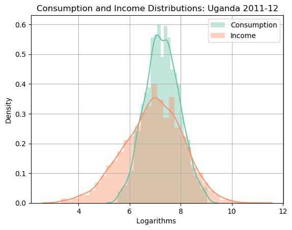

import pandas as pd
# import numpy as np
# import matplotlib.pyplot as plt
import os
# import seaborn as sns
os.chdir('C:/Users/jzurita/OneDrive - University of Edinburgh/Courses/Programming Numerical Methods/Week 3/')
from functions import gini
# import warnings
# warnings.filterwarnings('ignore') #sns warning disactivated
#display options: To print entire tables
# pd.options.display.float_format = '{:,.2f}'.format
# pd.set_option('display.max_columns', None) # or 1000
# pd.set_option('display.max_rows', None) # or 1000
# pd.set_option('display.max_colwidth', None) # or 199
# plots display default options
# sns.set_palette("Set2") # set of colors in seaborn
# import matplotlib as mpl
# fm = mpl.font_manager
ECNM10115 Programming and Numerical Methods for Economics
Lab 2
File from Learn - Course Material - Week 3
- functions.py
- UNPS_1112_PS2.xls
Import Libraries, Functions and Display Settings
Import Data
data = pd.read_excel('UNPS_1112_PS2.xls')data| hhid | wave | year | region | district | county | urban | year_surv | month_surv | head_gender | ... | income | wage_labor | business_inc | other_inc | agriculture_inc | livestock_inc | wealth | asset_value | wealth_agrls | land_value_hat | |
|---|---|---|---|---|---|---|---|---|---|---|---|---|---|---|---|---|---|---|---|---|---|
| 0 | 1013000204 | 2011-2012 | 2012 | 1 | KALANGALA | KYAMUSWA | 0 | 2012 | 3 | 1.0 | ... | 717.277761 | NaN | 717.277761 | 0.000000 | NaN | NaN | 102.530580 | 102.530580 | NaN | NaN |
| 1 | 1013000206 | 2011-2012 | 2012 | 1 | KAMPALA | RUBAGA DIVISION | 0 | 2012 | 9 | 1.0 | ... | 1839.529498 | 949.476802 | 890.052696 | 0.000000 | NaN | NaN | 821.989843 | 821.989843 | NaN | NaN |
| 2 | 1013000210 | 2011-2012 | 2012 | 1 | KALANGALA | KYAMUSWA | 0 | 2012 | 2 | 1.0 | ... | 91.623072 | NaN | NaN | 0.000000 | NaN | 91.623072 | 1202.661890 | 268.324710 | 934.337180 | NaN |
| 3 | 1013000212 | 2011-2012 | 2012 | 4 | KYEGEGWA | KYAKA | 0 | 2012 | 3 | 1.0 | ... | 2617.802047 | 1989.529555 | 628.272491 | 0.000000 | NaN | NaN | 494.764587 | 494.764587 | NaN | NaN |
| 4 | 101300021302 | 2011-2012 | 2012 | 1 | MPIGI | MAWOKOTA | 0 | 2012 | 4 | 2.0 | ... | 811.518634 | NaN | 157.068123 | 654.450512 | NaN | NaN | 54.537543 | 54.537543 | NaN | NaN |
| ... | ... | ... | ... | ... | ... | ... | ... | ... | ... | ... | ... | ... | ... | ... | ... | ... | ... | ... | ... | ... | ... |
| 2608 | 4193003504 | 2011-2012 | 2012 | 4 | KIRUHURA | NYABUSHOZI | 0 | 2012 | 2 | 2.0 | ... | 1046.796900 | NaN | NaN | 0.000000 | 1037.634593 | 9.162307 | 11837.852383 | 256.108300 | 119.109993 | 11462.634090 |
| 2609 | 4193003506 | 2011-2012 | 2012 | 4 | KIRUHURA | NYABUSHOZI | 0 | 2012 | 2 | 1.0 | ... | 10505.763174 | NaN | 8376.966549 | 130.890102 | 668.412123 | 1329.494399 | 6291.311323 | 405.759317 | 4794.940749 | 1090.611257 |
| 2610 | 4193003507 | 2011-2012 | 2012 | 4 | KIRUHURA | NYABUSHOZI | 0 | 2012 | 2 | 2.0 | ... | 1216.754391 | NaN | NaN | 0.000000 | 848.167863 | 368.586528 | 1888.801009 | 241.274089 | 271.596962 | 1375.929958 |
| 2611 | 4193003508 | 2011-2012 | 2012 | 4 | KIRUHURA | NYABUSHOZI | 0 | 2012 | 8 | 1.0 | ... | 814.485477 | NaN | NaN | 0.000000 | 814.485477 | NaN | 4142.348323 | 842.059658 | 10.471208 | 3289.817457 |
| 2612 | 4193003509 | 2011-2012 | 2012 | 4 | KIRUHURA | NYABUSHOZI | 0 | 2012 | 8 | 1.0 | ... | 1937.435295 | NaN | NaN | 0.000000 | 1314.136627 | 623.298667 | 21088.468461 | 796.248123 | 3429.320681 | 16862.899657 |
2613 rows × 30 columns
Note
Make sure you have installed xlrd package. Otherwise, you might have some difficulties to read the data file.
To install this package run:
conda install anaconda::xlrd
!pip install xlrd Requirement already satisfied: xlrd in c:\users\jzurita\appdata\local\anaconda3\lib\site-packages (2.0.1)Exercise 1
a). Are there duplicate households in the data? i.e. repeated household id?. How many observations?
data[data.duplicated(keep=False)]
print('1a =======)')
print('There are no duplicate households')
# total number of observations
print('The total number of obsertations is N=', sum(data['hhid'].notna()))1a =======)
There are no duplicate households
The total number of obsertations is N= 2613- Present some basic summary statistics for some main variables. Anything we should be careful? like missing a lot of observations?
print('1b =======)')
print(data[['head_gender','head_age','familysize','consumption','income','wealth']].describe())1b =======)
head_gender head_age familysize consumption income \
count 2597.000000 2597.000000 2597.000000 2613.000000 2613.000000
mean 1.314209 46.068156 7.480554 1803.792687 1860.075795
std 0.464289 15.068960 3.712526 1308.742941 2607.517603
min 1.000000 14.000000 1.000000 250.305506 27.486921
25% 1.000000 34.000000 5.000000 918.324958 471.204368
50% 1.000000 44.000000 7.000000 1426.614855 1061.194208
75% 2.000000 56.000000 9.000000 2296.859516 2234.800590
max 2.000000 100.000000 33.000000 8369.898484 52137.736864
wealth
count 2613.000000
mean 4912.698146
std 8359.886497
min 0.000000
25% 720.019916
50% 2108.598380
75% 5221.939857
max 76396.339917 Exercise 2
a) Create the variables ‘log_c’ ‘log_inc’, ‘log_w’ that are the log of consumption, income, and wealth.
data[['consumption','income','wealth']].describe() # 2613 observations. No observations below 0, but some equal to zero.| consumption | income | wealth | |
|---|---|---|---|
| count | 2613.000000 | 2613.000000 | 2613.000000 |
| mean | 1803.792687 | 1860.075795 | 4912.698146 |
| std | 1308.742941 | 2607.517603 | 8359.886497 |
| min | 250.305506 | 27.486921 | 0.000000 |
| 25% | 918.324958 | 471.204368 | 720.019916 |
| 50% | 1426.614855 | 1061.194208 | 2108.598380 |
| 75% | 2296.859516 | 2234.800590 | 5221.939857 |
| max | 8369.898484 | 52137.736864 | 76396.339917 |
# Create the logs
data[['log_c','log_inc','log_w']] = np.log(data[['consumption','income','wealth']])
data[['log_c','log_inc','log_w']] .describe()| log_c | log_inc | log_w | |
|---|---|---|---|
| count | 2613.000000 | 2613.000000 | 2613.000000 |
| mean | 7.273602 | 6.912703 | -inf |
| std | 0.670492 | 1.157038 | NaN |
| min | 5.522682 | 3.313710 | -inf |
| 25% | 6.822551 | 6.155292 | 6.579279 |
| 50% | 7.263060 | 6.967150 | 7.653779 |
| 75% | 7.739298 | 7.711907 | 8.560624 |
| max | 9.032397 | 10.861644 | 11.243690 |
##
data[['log_c','log_inc','log_w']] = data[['log_c','log_inc','log_w']].replace([-np.infty], np.nan)
### The log-variance measure of inequality is not the best when there might be a lot of zeros in the data.
data[['log_c','log_inc','log_w']].describe()| log_c | log_inc | log_w | |
|---|---|---|---|
| count | 2613.000000 | 2613.000000 | 2597.000000 |
| mean | 7.273602 | 6.912703 | 7.475775 |
| std | 0.670492 | 1.157038 | 1.636211 |
| min | 5.522682 | 3.313710 | 0.269188 |
| 25% | 6.822551 | 6.155292 | 6.600676 |
| 50% | 7.263060 | 6.967150 | 7.664869 |
| 75% | 7.739298 | 7.711907 | 8.565685 |
| max | 9.032397 | 10.861644 | 11.243690 |
# plot in the same graph the log_c and the log_inc.
fig, ax = plt.subplots()
sns.distplot(data[['log_c']], label='Consumption')
sns.distplot(data[['log_inc']], label='Income')
plt.title('Consumption and Income Distributions: Uganda 2011-12')
plt.xlabel('Logarithms ')
plt.ylabel('Density')
ax.legend()
ax.grid()
plt.show()
e) Inequality compute the Gini of Consumption, Income and Wealth.
gini_ciw = data[['consumption','income','wealth']].apply(gini)
gini_ciw = pd.DataFrame(gini_ciw,columns=['Gini'])
print(' ')
print('2e =======')
print('Inequality in Uganda: Gini coefficients')
print(gini_ciw)
2e =======
Inequality in Uganda: Gini coefficients
Gini
consumption 0.365717
income 0.555572
wealth 0.656828